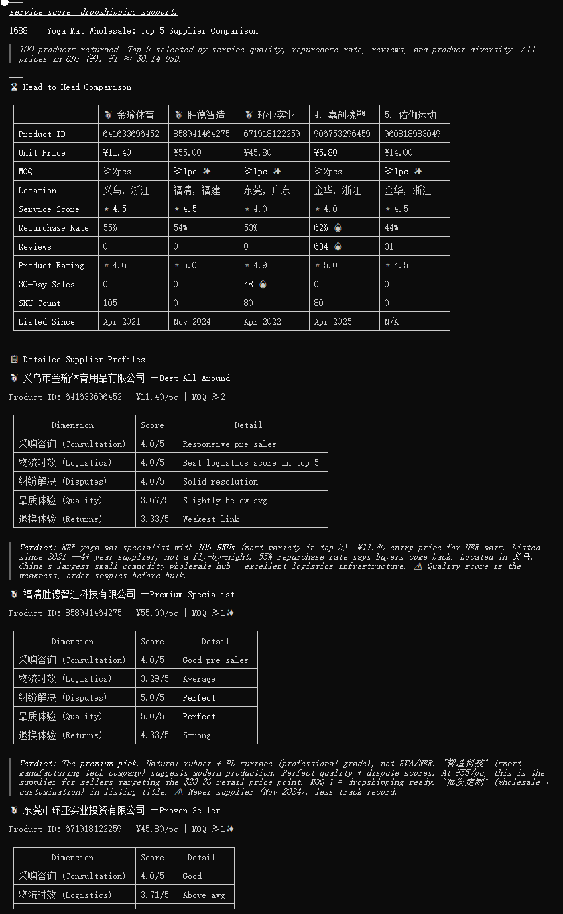

Finding a supplier on 1688 who makes what you sell for 60% less than your current cost changes everything. The question is how to find that connection reliably, across thousands of factories, without spending weeks manually cross-referencing spreadsheets. Marketplace data is the answer — and it is now accessible in a way it never was before.
1688, operated by Alibaba Group, is China's largest wholesale platform. It connects over 110 million active buyers with more than 1 million verified supplier factories, spanning 100+ industrial clusters across China — from Shenzhen's 3C electronics ecosystem to Yiwu's small commodities hub and Guangzhou's apparel district. Cross-border buyers alone generate over 10 billion RMB (roughly USD 1.4 billion) in daily transaction volume on the platform, growing at nearly 30% year over year.
For marketplace sellers around the world, 1688 is the procurement backbone that makes e-commerce margins work. A bluetooth speaker that retails for USD 49.95 on Amazon often costs USD 5-12 wholesale on 1688 in sufficient quantity. A portable power bank selling for USD 25.99 on Shopee can be sourced for USD 3-6 from Shenzhen battery manufacturers. These gaps are not anomalies — they reflect the structural difference between factory-gate wholesale and marketplace retail.
The challenge has never been whether the price gap exists. It is how to:
The gap between 1688 wholesale and marketplace retail is a data problem. One platform holds supply-side intelligence (factory pricing, minimum order quantities, shipping capabilities). Other platforms hold demand-side intelligence (sales velocity, pricing elasticity, customer reviews, category trends).
The key insight is that the same product category — or even the exact same SKU — can be traced across both sides. A popular kitchen gadget on Amazon US, a trending fashion accessory on Shopee Indonesia, and a fast-moving home item on Walmart all have upstream suppliers listed on 1688. The trick is connecting the dots programmatically.
Some product categories consistently show strong sourcing economics. Here are examples with verifiable pricing ranges across platforms:
| Product Category | Typical 1688 Wholesale (per unit) | Typical Amazon/Walmart Retail | Typical Shopee/TikTok Retail | Margin Potential |
|—-|—-|—-|—-|—-|
| Portable bluetooth speakers (basic) | USD 5-12 | USD 25-50 | USD 15-30 | 3x-5x wholesale |
| Wireless earbuds (white label) | USD 3-8 | USD 20-40 | USD 10-25 | 4x-7x wholesale |
| LED desk lamps (touch control) | USD 4-10 | USD 18-35 | USD 10-20 | 3x-4x wholesale |
| Kitchen food storage containers (set) | USD 2-5 | USD 12-25 | USD 6-15 | 3x-6x wholesale |
| Phone accessories (cases, stands) | USD 1-4 | USD 10-20 | USD 5-12 | 4x-8x wholesale |
| Yoga mats (TPE, 6mm) | USD 3-6 | USD 18-30 | USD 8-15 | 3x-6x wholesale |
| Pet grooming tools | USD 2-5 | USD 12-22 | USD 6-12 | 3x-5x wholesale |
| Home organization bins (plastic) | USD 1-3 | USD 8-18 | USD 4-8 | 4x-8x wholesale |
These ranges come from cross-referencing 1688 bulk pricing with current marketplace listings. Your actual margins will depend on order quantity, shipping method, FBA or local fulfillment costs, and marketplace fees.
Note that not every product category works. Heavy or bulky items (furniture, large appliances) have shipping costs that can erase the wholesale advantage. Highly regulated categories (baby products, medical devices, food contact items) carry certification requirements that add time and cost. And branded/copyrighted products should be avoided entirely.
Price is only part of the sourcing decision. 1688 data reveals supplier reliability through several dimensions:
Fulfillment speed. Suppliers with 24-hour dispatch and high on-time rates reduce inventory risk and cash flow pressure.
Service ratings. Detailed breakdowns across purchase consulting, logistics speed, dispute resolution, product quality, and return experience signal which suppliers actually deliver.
Wholesale pricing tiers. Quantity breaks reveal the real cost structure — a product that costs USD 8 at 100 units may drop to USD 5 at 500 and USD 3.50 at 2,000.
Drop shipping support. Some suppliers offer one-piece shipping (一件代发), letting you test a listing without bulk inventory. This is especially useful for new sellers or new product trials.
Cross-border readiness. Suppliers tagged for cross-border distribution typically support international shipping, standard packaging, and faster turnaround for marketplace sellers.
The most effective approach combines 1688 supply data with marketplace demand data in a structured loop:
1. Identify a category where marketplace demand exists and competition is not saturated — using sales volume, review count, and price distribution data from Amazon, Shopee, or Walmart.
2. Search 1688 for matching suppliers — using product names or images to find factories that already make what sells.
3. Compare cost structures — wholesale price, shipping, FBA fees (if Amazon), and platform commissions against the marketplace selling price.
4. Check supplier reliability — fulfillment speed, repurchase rate, and service scores across multiple dimensions.
5. Validate with real-time data — monitor marketplace sales velocity and pricing trends to confirm the opportunity is real and not a short-term spike.
Sorftime Seller Agent collapses steps one through four into a single query. You describe what you are looking for, and it returns matched suppliers with pricing, sales data, and reliability metrics from both 1688 and your target marketplace.
Sorftime Seller Agent uses the Model Context Protocol (MCP), an open standard that lets AI assistants connect directly to live data sources. Instead of copying and pasting screenshots or running manual searches across five websites, you tell your AI assistant what you need, and it fetches the data live from 1688 and marketplace APIs through the MCP connection. The tool works with any MCP-enabled assistant (Claude Code, Cursor, OpenClaw, Copilot, and others).
git clone https://github.com/DannylydST/sorftime-seller-agentOnce cloned, configure it with your Sorftime API credentials (available from the international portal) and start querying cross-platform data immediately.
For a hosted version with a visual interface, visit the international portal at open-intl.sorftime.com.
The platform covers 1688 (domain 601) alongside Amazon (US, UK, DE, FR, IT, ES, JP, CA, IN, MX, AE, AU, BR, SA), Shopee (VN, ID, SG, TH, MY, TW, PH, BR), Walmart (US), Temu (US, EU), and TikTok Shop (US, MY, PH, SG, TH, VN, GB, ID) — with over 130 API endpoints in total.
1688 remains one of the most potent supply chain advantages available to independent marketplace sellers. The factories are there, the pricing is there, and the cross-border infrastructure only gets better each year. What has been missing is a systematic way to connect wholesale supply with marketplace demand data in a single step.
Cross-platform data changes that. It turns sourcing from a manual, intuition-driven process into a data-informed workflow where you can see the full picture — factory price, retail price, competition level, and supplier reliability — before you commit a dollar to inventory.
Orchestrate the data layer well, and the sourcing decisions largely make themselves.